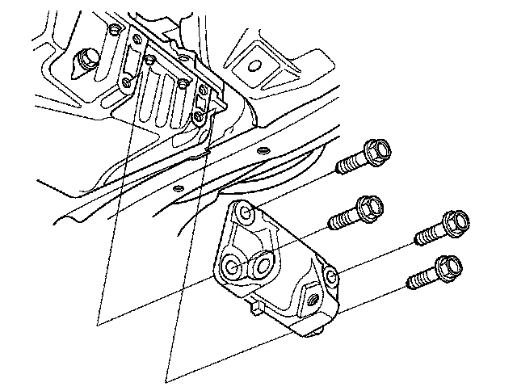
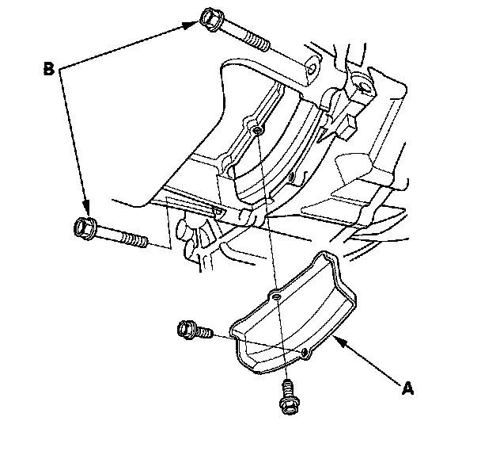
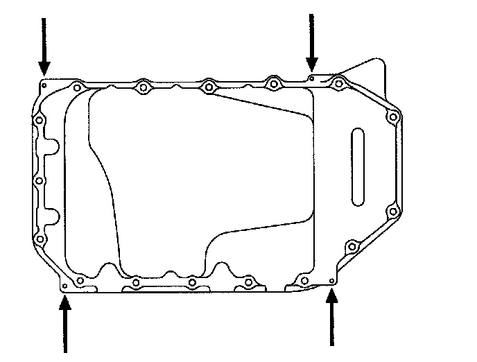

Oil Pan Removal
Oil Pan Removal1. If the engine is out of the vehicle, go to step 16.
2. Raise the vehicle on the lift to full height.
3. Drain the engine oil.
4. Remove the front wheels.
5. Remove the splash shield.
6. Separate the stabilizer links.
7. Separate the knuckles from the lower arms.
8. Remove the steering gearbox bracket. Remove the steering gearbox mounting bolt, stiffener mounting bolt, and stiffener.
9. Remove the steering gearbox mounting bolt, stiffener mounting bolt, and stiffener. Remove the harness clamp from the front subframe.
10. Remove the lower torque rod.
11. Remove the front mount mounting bolt.
12. Note the reference marks on both sides of the front subframe that line up with the body.
13. Loosen the front subframe body mount bracket mounting bolts on both side.
14. Support the front subframe with the front subframe adapter and a jack.
15. Remove the front subframe.
16. Remove the lower torque rod bracket.

17. Remove the clutch cover (A) and transmission mounting bolts (B).

18. Remove the bolts securing the oil pan.
19. Using a flat blade screwdriver, separate the oil pan from the block in the places shown.

20. Remove the oil pan.